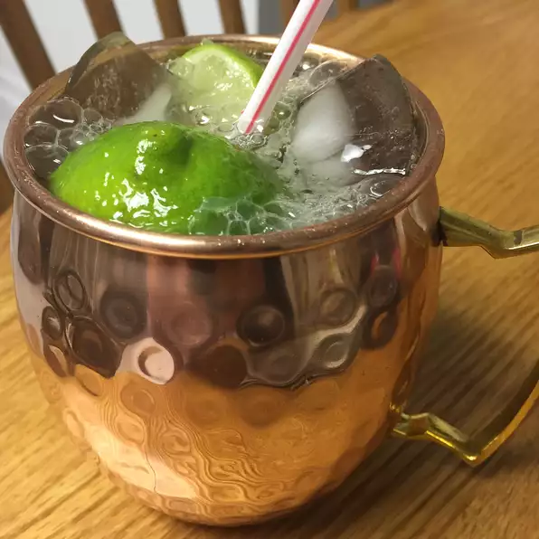

Refreshing Moscow Mule

Why should you learn to make a Moscow Mule?
As shown above a Moscow Mule can be arguably one of more the more refreshing alcoholic beverages
to drink when either going out or even staying in. Simply put this beverage is both simple and very much
considered a classic anywhere you go. Learning how to make this drink will make you famous among
all of you friends.
Below are the simple yet essentail ingredients needed to make this beverage:
- Ice
- 1/2 fresh lime
- 1 fluid ounces of vodka(can be any flavoring as long as it is the original flavor)
- 4 fluid ounces(or to taste) of ginger beer
- (optional but prefered) Two lime slices
The directions(below) are very simple and can be done in less than 5 minuetes:
- Fill glass with ice
- Squeeze 1/2 lime over the ice
- Pour vodka over ice and top with the ginger beer
- Garnish with lime slices
Click here to return to the main menu